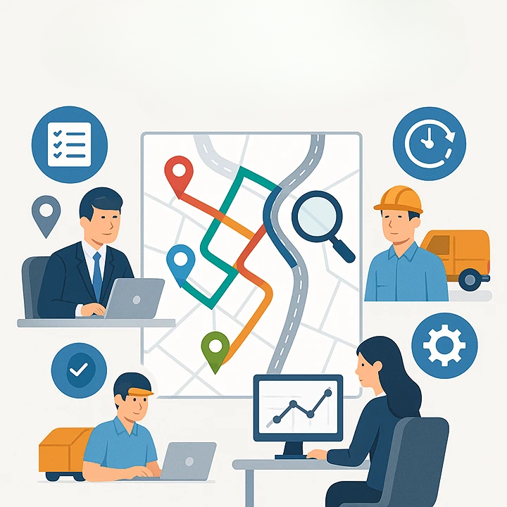

Mis Proyectos

Control y seguimiento automatizado de rutas de trabajo
Visualización de recorridos y métricas de trabajo para equipos técnicos, usando Power BI y automatización ETL en Python.
Ordenamiento inteligente de rutas y notificaciones automáticas
Asignación automática de recorridos según móviles disponibles y distancias, con predicción del tiempo de llegada y envío de notificaciones por WhatsApp a los choferes y correos personalizados a los clientes.